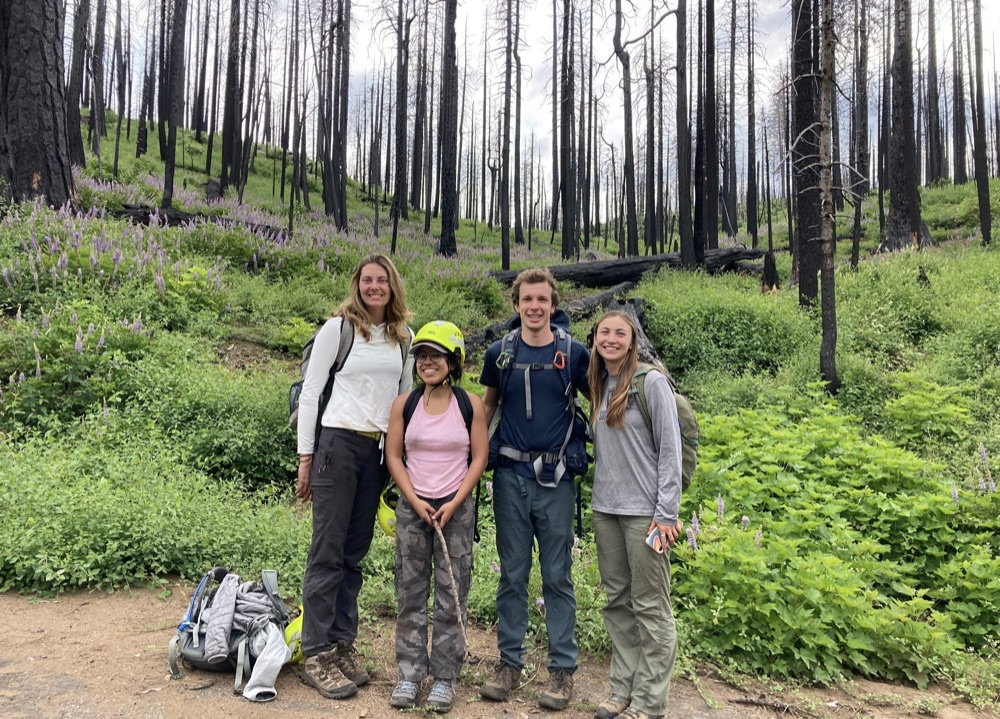

Functional traits
Functional traits form the basis of countless theories and models of how trees and forests function. And yet, within species trait variation continues to baffle us by showing patterns contrary to what we would expect from cross-species analyses or from our typical understanding of trait-environment relationships.
Leveraging long-term demographic data, physiological trait measurements, and fine scale-microclimate data, my work seeks to understand species drought tolerance strategies and the drivers of within-species trait variation. Then, I seek to apply these insights to better understand how to predict and manage for the impacts of climate change.